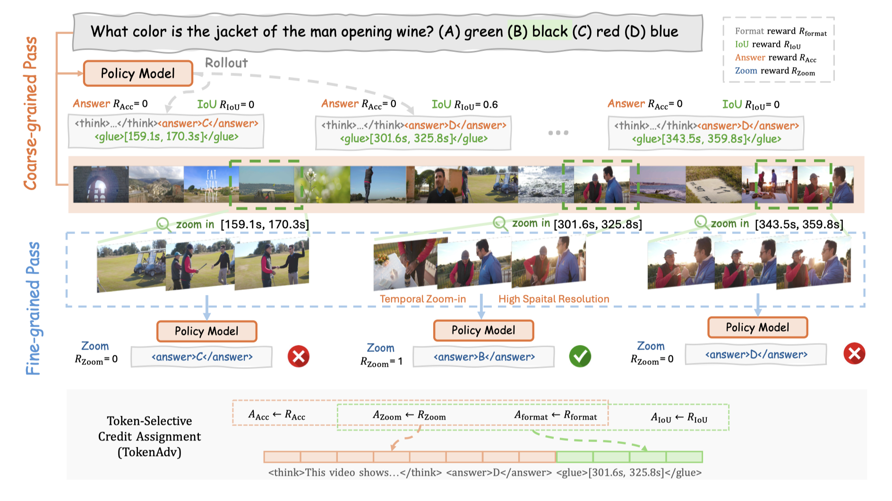
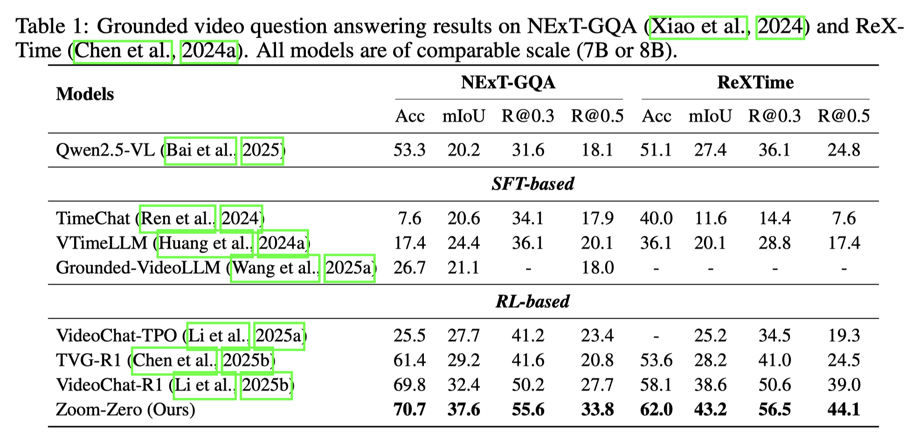
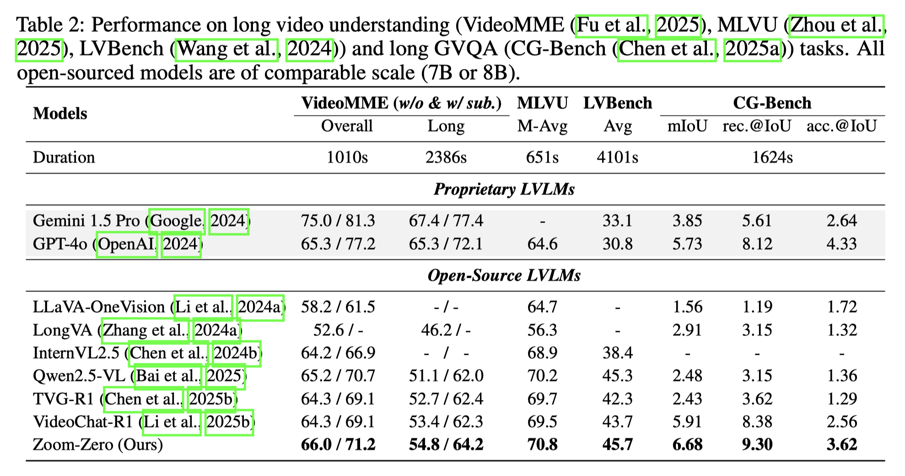
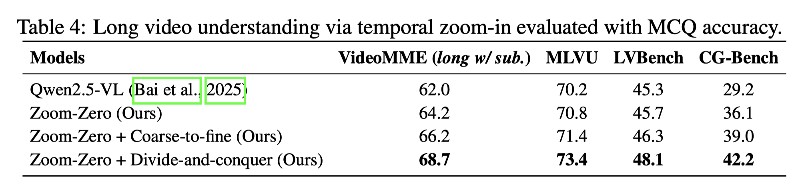
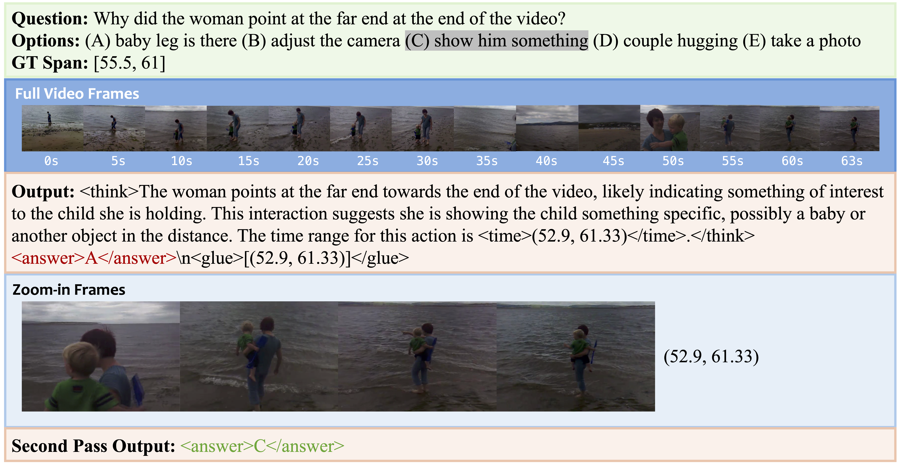
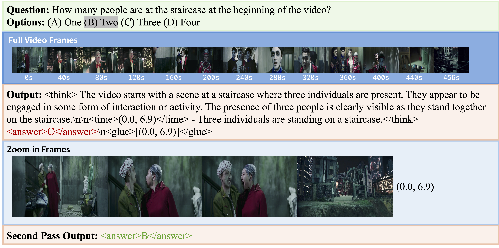
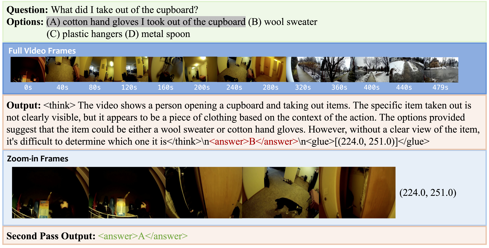

Grounded video question answering (GVQA) aims to localize relevant temporal segments in videos and generate accurate answers to a given question; however, large video-language models (LVLMs) exhibit limited temporal awareness. Although existing approaches based on Group Relative Policy Optimization (GRPO) attempt to improve temporal grounding, they still struggle to faithfully ground their answers in the relevant video evidence, leading to temporal mislocalization and hallucinations. In this work, we present Zoom-Zero, a coarse-to-fine framework that first localizes query-relevant segments and then temporally zooms into the most salient frames for finer-grained visual verification. Our method addresses the limits of GRPO for the GVQA task with two key innovations: (i) a zoom-in accuracy reward that validates the fidelity of temporal grounding prediction and facilitates fine-grained visual verification on grounded frames; (ii) token-selective credit assignment, which attributes rewards to the tokens responsible for temporal localization or answer generation, mitigating GRPO’s issue in handling multi-faceted reward signals. Our proposed method advances grounded video question answering, improving temporal grounding by 5.2% on NExT-GQA and 4.6% on ReXTime, while also enhancing average answer accuracy by 2.4%. Additionally, the coarse-to-fine zoom-in during inference further benefits long-form video understanding by preserving critical visual details without compromising global context, yielding an average improvement of 6.4% on long-video benchmarks.






